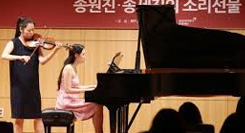

365일 음악이 멈추지 않는 클래식의 전당,
금호아트홀
금호아시아나문화재단은 2000년 12월 서울 광화문에 305석 규모의 클래식 전용 공연장인 금호아트홀을 개관하였습니다. 이후 2008년 3월, 증설 공사를 통해 390석 규모로 새롭게 태어났습니다.
탄탄한 기획과 더불어 실내악에 가장 적합한 음향을 갖춘 공연장으로 평가 받고 있는 금호아트홀은 실력 있는 연주자들이 연주할 수 있는 정기적인 무대를 제공함과 동시에 한국의 클래식 청중들에게 최고 수준의 연주자들을 끊임없이 소개하고 있습니다.
금호아트홀에서는 개관이래 지금까지 ‘금요시리즈’부터 현재의 ‘아름다운 목요일’에 이르는 간판 기획 프로그램을 통하여 국내외 정상급 연주자들의 무대를 꾸준히 선보이고 있습니다. 매주 토요일에는 한국 음악 영재들의 데뷔 무대인 ‘금호영재콘서트’와 ‘ 금호영아티스트콘서트’, ‘금호영체임버콘서트’시리즈 무대를 소개하고 있습니다.
호아트홀은 주 3회 올려지는 기획공연부터 대관공연에 이르기까지 1년 365일 끊임없이 클래식 음악 선율이 흐르는 클래식의 전당으로 자리매김하며 한국 클래식 팬들의 사랑을 받고 있습니다.
젊은 음악가의 꿈, 그리고 교육의공간,
문호아트홀

2006년 3월 개관한 문호아트홀은, 210석 규모로 한국의 젊은 음악가들을 위한 공연장으로 설계되어 젊은 음악가들을 육성하는 교육의 장으로써 활용되고 있습니다.
초등학생들과 부모님이 함께 참여 할 수 있는 교육적 목적의 콘서트인 ‘에듀 콘서트’를 기획하여 딱딱한 음악감상에서 벗어나 직접 음악을 보고 느끼는 체험하는 학습을 제공하며 큰 호응을 얻은 바 있으며, 금호영재•영아티스트를 위한 특별 교육의 일환으로 세계적인 거장을 초대하여 그들의 음악적 경험은 물론, 1:1 지도를 받을 수 있는 마스터 클래스가 열리고 있습니다.
대학 문화예술 진흥을 위한 공간,
금호아트홀 연세
연세대학교 백양로 지하에 390석 규모의 클래식 전문 공연장인 금호아트홀 연세가 2015년 10월 개관하였습니다.
금호아트홀 연세는 금호아시아나그룹 박삼구 회장의 대학문화예술 진흥을 위한 100억원의 기부약정으로 시작되었습니다. 금호아트홀 연세는 실내악에 최적화된 음향과 인테리어는 물론 뛰어난 접근성과 함께 편리한 동선 계획과 편의시설과의 연계를 고려한 공간계획을 갖춘 공연장으로 설계되었습니다.